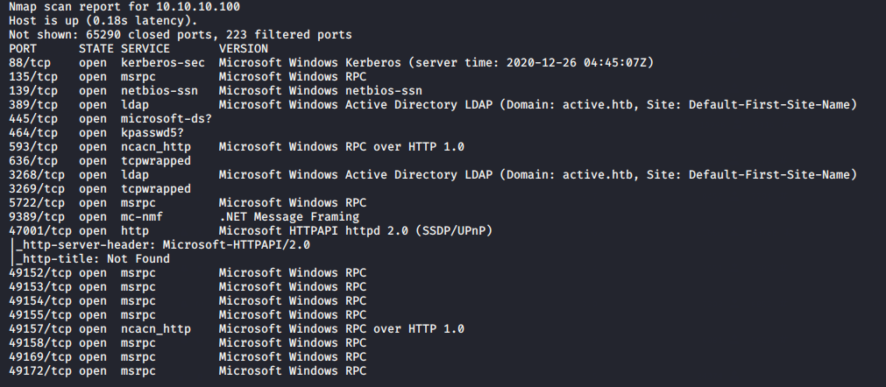

proof that active wala machine on htb is domain controller:Port 88 pe kereberos
port 389 and 3268 pe ldap
and even port 445 is open which we wanna enumerate
and using it as this gpp attack requires smb

so found diff folders SYSVOL and Users too
Replication folder does have anonymous access avaulable na

so sysvol is storing groups.xml file in whihc there is cPassword where gpp comes into play

prompt off taaki doesnt priompt while downlaoding files
recurse on means lets us downlaod all files which i tell it to

here groups.xml file is of importance to us
once u have a user acc u ll have access to sysvol wala folder waise bhi

thus got stored here

thus we have cPassword file and name as active.htb bt we alos havenext to it SVC_TGS:
so it is the tgs account
copy cpassword and do foll thing

thius could drecrypt it even thouhg password was so ling as we had the encyption one already
thus username and password is as follows: